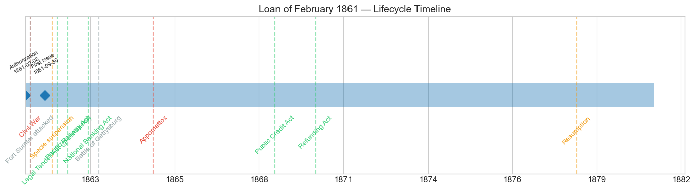
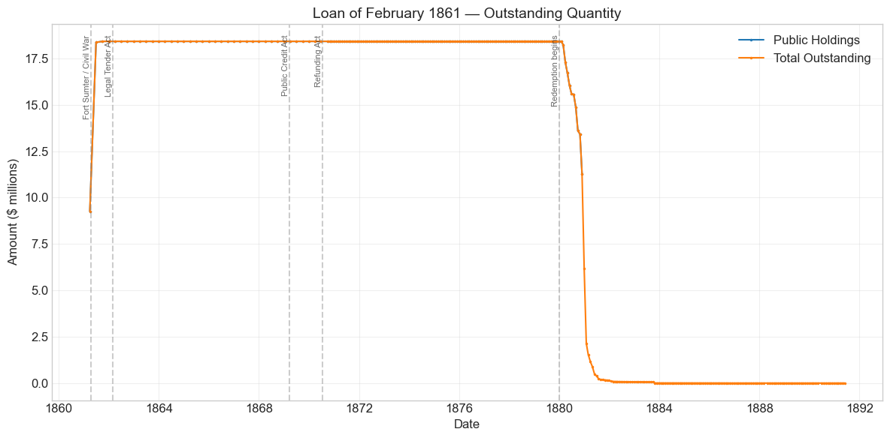
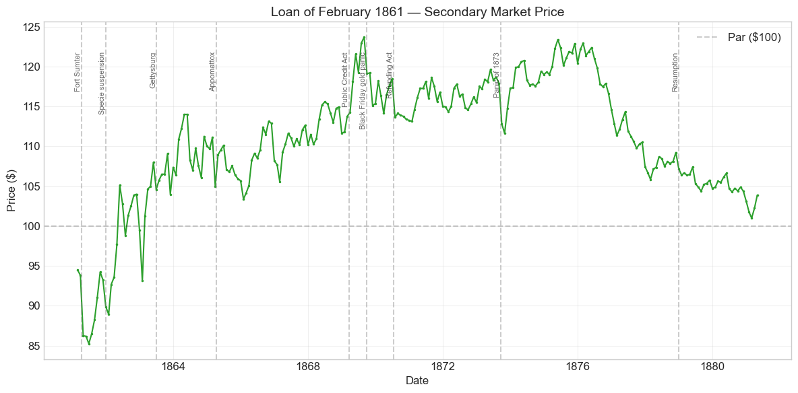
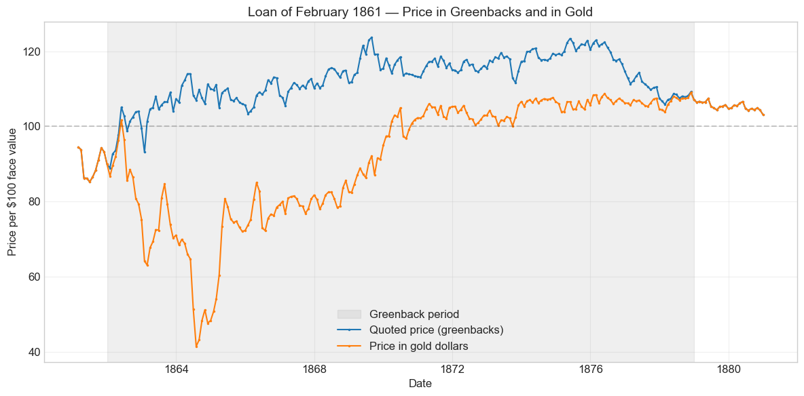
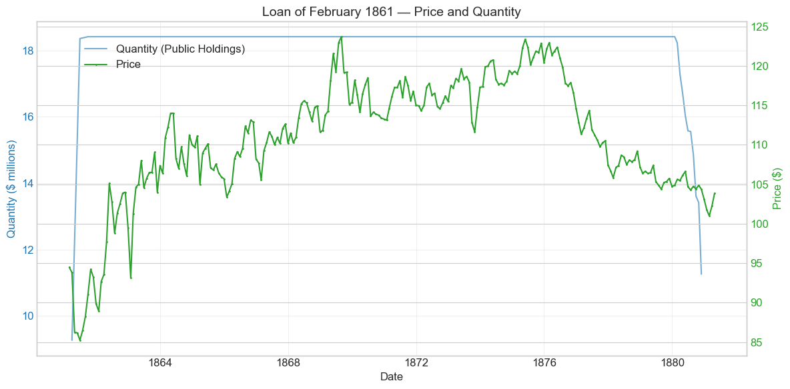
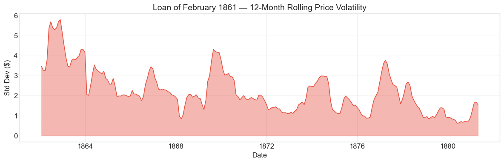

Bond Biography: Loan of February 1861#
The Secession-Crisis Loan: Borrowing on the Edge of Disunion#
Enhanced from the Hall-Payne-Sargent US Federal Bond Database (2,857 issues, 1776–1960)
Bond ID (L1): 20096 Category: Interest Bearing > Marketable > Long Term Bond Coupon: 6% semi-annual, payable in coin Term: Redeemable after 10 years, payable in 20 — the “Sixes of 1881” Authorization: Up to $25,000,000 under the Act of February 8, 1861
“If any one attempts to haul down the American flag, shoot him on the spot.” — Treasury Secretary John A. Dix, telegram to a Treasury agent in New Orleans, January 29, 1861
Data note. Quotations from January 1862 to December 1878 are prices in greenbacks, while this bond’s coupons (and, after the Public Credit Act of 18 March 1869, its principal) were payable in coin. Wartime price movements therefore mix the gold premium with credit news.
import pandas as pd
import numpy as np
import matplotlib.pyplot as plt
import matplotlib.patches as mpatches
import datetime
import warnings
warnings.filterwarnings('ignore')
plt.style.use('seaborn-v0_8-whitegrid')
plt.rcParams.update({'figure.figsize': (12, 6), 'font.size': 12,
'axes.titlesize': 14, 'axes.labelsize': 12})
# Load the bond database
store = pd.HDFStore('../data/BondDF.h5', mode='r')
BondList = store['BondList']
BondQuant = store['BondQuant']
BondPrice = store['BondPrice']
store.close()
BondQuant_T = BondQuant.transpose()
BondPrice_T = BondPrice.transpose()
bond_id = 20096
print(f'Loaded data for: Loan of February 1861 (ID: 20096)')
/Users/thomassargent/anaconda3/lib/python3.9/site-packages/pandas/core/arrays/masked.py:60: UserWarning: Pandas requires version '1.3.6' or newer of 'bottleneck' (version '1.3.5' currently installed).
from pandas.core import (
Loaded data for: Loan of February 1861 (ID: 20096)
Overview#
The Loan of February 1861 was authorized by the Act of February 8, 1861, which empowered the Treasury to borrow up to \(25 million on 6 percent bonds, redeemable after ten years and payable in twenty --- making them, together with the sixes issued under the loan acts of the following summer, part of the family of bonds Wall Street would come to call the **"Sixes of 1881."** In the end \)18,415,000 was placed under the act. The bond was active through the entire Civil War and Reconstruction; during its lifetime on the secondary market, its average price was \(110.7, ranging from \)85.25 to \(123.69 (243 monthly observations from 1861-02-28 to 1881-04-30). Peak outstanding reached \)18.41 million on 1861-09-30.
What makes this bond’s story distinctive is its birth date. The Five-Twenties of 1862 (see the companion chapter on Bond 20101) were a wartime loan; the Loan of February 1861 was a secession-crisis loan, floated in the last weeks of the Buchanan administration, before a shot had been fired. When the act passed, seven states of the lower South had already voted to leave the Union, delegates were assembling in Montgomery to organize a Confederate government, and the federal Treasury — starved of revenue by the Panic of 1857 and by years of deficits — was struggling to meet ordinary expenses. Federal credit, which through most of the 1850s had commanded a premium, had collapsed: late in 1860 the Treasury could sell its paper only at rates that implied the market seriously entertained the possibility of national dissolution.
The bond thus stands at the hinge of American fiscal history. Its earliest sales, conducted at painful discounts by Secretary John A. Dix — the Unionist Democrat brought into Buchanan’s collapsing cabinet to restore confidence — record the market’s verdict on a government whose survival was in doubt. Its later sales, under Salmon P. Chase after Fort Sumter, mark the first steps of Civil War finance proper. And its final chapter, redemption around 1880–81 amid the great refunding operations that replaced the wartime sixes with 5, 4½, and 4 percent bonds, closes the arc that the companion chapter on the Four Percent Loan of 1907 (Bond 20121) tells from the other end. Few securities in the database compress so much of the Republic’s near-death and recovery into a single price series.
Bond Features#
Feature |
Detail |
|---|---|
Name |
Loan of February 1861 |
Authorizing Act |
February 8, 1861 |
Authorization Date |
February 08, 1861 |
First Issue Date |
September 30, 1861 (database convention; sales began February 1861) |
Term |
Redeemable after 10 years, payable in 20 |
Payable Date |
December 31, 1880 |
Coupon Rate |
6.0% |
Payment Frequency |
Semi-annual, in coin |
Callable |
No (but redeemable at the government’s pleasure after 10 years) |
Payable in Coin |
Yes |
Authorized Amount |
\(25,000,000 (of which \)18,415,000 issued) |
Price Sold |
~0.8903 (average — a deep discount) |
# Display full bond features from database
row = BondList.loc[20096]
display_cols = [
"Treasury's Name Of Issue", 'Authorizing Act', 'Term Of Loan',
'First Issue Date', 'First Redemption Date', 'Final Redemption Date',
'Coupon Rate', 'Coupons Per Year', 'Callable', 'Coin',
'Authorized Amount', 'Price Sold'
]
print('Bond Features from Database:')
print('=' * 55)
for col in display_cols:
if col in row.index:
print(f' {col:<30} {row[col]}')
Bond Features from Database:
=======================================================
Treasury's Name Of Issue Loan of February 1861
Authorizing Act February 8, 1861
Term Of Loan 10 or 20 years
First Issue Date 1861-09-30 00:00:00
First Redemption Date NaT
Final Redemption Date NaT
Coupon Rate 6.0
Coupons Per Year 2.0
Callable 0.0
Coin 1.0
Authorized Amount nan
Price Sold 0.8903
I. The Secession Winter: A Treasury on the Brink#
To understand why the United States had to pay so dearly for money in February 1861, one must go back to the autumn of 1860. The federal government had been running deficits since the Panic of 1857 gutted its customs revenue, and it had been covering the gap with a patchwork of short-term Treasury notes and loans. As long as sectional peace held, this was an inconvenience; when Abraham Lincoln’s election in November 1860 set the machinery of secession in motion, it became a crisis.
Bray Hammond’s aptly titled study of early Civil War finance, Sovereignty and an Empty Purse (1970), captures the situation in its name. In December 1860, as South Carolina voted to secede, Treasury Secretary Howell Cobb of Georgia — himself a secessionist — resigned to join the Southern cause. His successor, Philip Thomas of Maryland, lasted barely a month, unable to command the confidence of the Northern money markets on which the government now wholly depended. Bids for Treasury notes offered in the last weeks of 1860 came in at ruinous rates — portions of the offerings drew bids only at double-digit interest, with rates running as high as 12 percent — and there were moments that winter when the Treasury lacked ready funds to pay members of Congress and ordinary public creditors. The United States, which a few years earlier had been retiring debt and whose bonds had sold above par, now found its credit priced like that of a state in dissolution — because that is precisely what the market feared it was.
In mid-January 1861 Buchanan reconstructed his cabinet around Unionists, and John A. Dix of New York took the Treasury. Dix was a former senator with standing among New York’s bankers, and his appointment was itself a confidence measure. His famous telegram of January 29, 1861 — ordering that anyone attempting to haul down the American flag at New Orleans “be shot on the spot” — made him a Northern hero and signaled that the executive branch, in its financial arm at least, intended to defend the government’s authority. But no telegram could conjure away the arithmetic: the Treasury needed millions, quickly, and lenders wanted to be paid for bearing the risk that the nation whose bonds they bought might not survive to redeem them.
II. The Act of February 8, 1861, and the Dix Sales#
Congress responded with the Act of February 8, 1861, authorizing a loan of up to $25 million in bonds bearing interest not exceeding 6 percent, redeemable after ten years and payable in twenty. Significantly — and in contrast to the loan act of June 1860, which had forbidden sales below par — the new act accommodated the reality that the government’s 6 percent credit was no longer worth 100 cents on the dollar: the bonds were to be awarded to the highest bidders, subject to limits that led the Secretary to reject the most predatory offers.
Dix moved at once, inviting bids on an $8 million installment in mid-February 1861. The tenders told the story of the secession winter with brutal clarity: bids came in scattered across a wide range, some so low that they had to be refused, and the accepted tenders averaged around 89 cents on the dollar — the figure preserved in the database’s Price Sold field of 0.8903. A 6 percent bond of the United States, an instrument that in 1858 would have commanded a premium, was being placed at a discount of roughly eleven points, an implied yield well above 7 percent. Contemporary observers understood exactly what that discount measured: not doubts about any particular revenue stream, but doubt about the continued existence of the debtor.
The remainder of the authorization was drawn upon after the change of administrations. Salmon P. Chase, Lincoln’s Treasury Secretary from March 1861, offered further installments in the spring — some before Sumter on slightly better terms as compromise hopes flickered, and more in the weeks after the bombardment of Fort Sumter (April 12–14, 1861), when the outbreak of war initially drove the government’s credit down again and bids sagged into the mid-80s. In all, **\(18,415,000** of the \)25 million was issued; the balance of the authority was overtaken by the far larger loan acts of July and August 1861, which created the national loan, the three-year 7.30 percent Treasury notes, and additional twenty-year sixes on terms Congress judged less humiliating than open sales at 85. The quantity series below shows the issuance pattern: roughly half the total outstanding by the end of March 1861, nearly all of it by midsummer.
III. Historical Context#
The following major events occurred during this bond’s lifetime:
Date |
Event |
Category |
|---|---|---|
1861-04-12 to 1865-04-09 |
Civil War |
War |
1861-04-12 |
Fort Sumter attacked |
War |
1861-12-30 |
Banks suspend specie payments |
Monetary |
1862-02-25 |
Legal Tender Act (greenbacks) |
Legislation |
1862-07-01 |
Pacific Railway Act |
Legislation |
1863-02-25 |
National Banking Act |
Legislation |
1863-07-01 to 1863-07-03 |
Battle of Gettysburg |
Military |
1864-06-03 |
National Banking Act (revised) |
Legislation |
1865-04-09 |
Lee surrenders at Appomattox |
Military |
1865-04-14 |
Lincoln assassinated |
Other |
1869-03-18 |
Public Credit Act |
Legislation |
1869-05-10 |
Transcontinental Railroad completed |
Other |
1869-09-24 |
Black Friday gold panic |
Crisis |
1870-07-14 |
Refunding Act (5s, 4.5s, 4s authorized) |
Legislation |
1873-09-18 to 1879-03-01 |
Panic of 1873 / Long Depression |
Crisis |
1875-01-14 |
Specie Payment Resumption Act |
Legislation |
1879-01-01 |
Resumption of specie payments |
Monetary |
1880–1881 |
Redemption of the Loan of February 1861 |
Resolution |
Three of these episodes deserve particular emphasis for this bond:
The Civil War (1861–65). The war shaped every dollar of this bond’s price history — first through the credit collapse that preceded and accompanied its issue, and then, after the banks suspended specie payments in December 1861 and the greenback arrived in 1862, through the wedge the war drove between paper and gold. As Section VI explains, from 1862 onward the bond’s quoted price is a currency (greenback) price, and much of its wartime rise above par records the depreciation of the greenback rather than any improvement in the government’s credit. In gold terms the bond remained deeply discounted through the war’s darkest years.
The Black Friday gold panic (September 24, 1869). Jay Gould and James Fisk’s attempt to corner the gold market, and the Treasury’s counterattack of gold sales, briefly threw the relationship between gold, greenbacks, and coin-paying bonds into chaos. The bond’s price, which had touched its all-time peak of $123.69 in August 1869 in the afterglow of the Public Credit Act, fell back sharply through the autumn — a decline of roughly 7 percent from the August peak by November.
The Panic of 1873 and the Long Depression. The failure of Jay Cooke & Co. in September 1873 forced liquidation across every market, and the sixes dipped with everything else. But the deeper effect of the depression ran the other way: as prices fell and interest rates declined through the mid-1870s, a safe 6 percent coin bond became ever more valuable, and the loan climbed back above $120 by 1875. Thereafter the pull of the approaching 1880 payable date, and the government’s growing ability to refund at 4–4.5 percent, drew the price steadily back toward par.
# Bond Lifecycle Timeline
fig, ax = plt.subplots(figsize=(14, 4))
# Key dates
dates = [('Authorization', '1861-02-08'), ('First Issue', '1861-09-30')]
events = [('Civil War', '1861-04-12', 'war'), ('Fort Sumter attacked', '1861-04-12', 'other'), ('Specie suspension', '1861-12-30', 'monetary'), ('Legal Tender Act (greenbacks)', '1862-02-25', 'legislation'), ('Pacific Railway Act', '1862-07-01', 'legislation'), ('National Banking Act', '1863-02-25', 'legislation'), ('Battle of Gettysburg', '1863-07-01', 'other'), ('Appomattox', '1865-04-09', 'war'), ('Public Credit Act', '1869-03-18', 'legislation'), ('Refunding Act', '1870-07-14', 'legislation'), ('Resumption', '1879-01-01', 'monetary')]
import matplotlib.dates as mdates
from datetime import datetime
# Plot bond lifetime bar
d0 = datetime.strptime('1861-02-08', '%Y-%m-%d')
d1 = datetime.strptime('1881-06-30', '%Y-%m-%d')
ax.barh(0, (d1 - d0).days, left=mdates.date2num(d0), height=0.3,
color='#1f77b4', alpha=0.4, label='Bond Lifetime')
# Mark key dates
for label, date_str in dates:
d = datetime.strptime(date_str, '%Y-%m-%d')
ax.plot(mdates.date2num(d), 0, 'D', color='#1f77b4', markersize=10)
ax.annotate(f'{label}\n{date_str}', (mdates.date2num(d), 0.25),
ha='center', va='bottom', fontsize=8, rotation=30)
# Mark historical events
colors = {'war': '#e74c3c', 'crisis': '#9b59b6', 'legislation': '#2ecc71', 'other': '#95a5a6', 'monetary': '#f39c12'}
for name, date_str, cat in events:
d = datetime.strptime(date_str, '%Y-%m-%d')
ax.axvline(mdates.date2num(d), color=colors.get(cat, 'gray'), alpha=0.5, linestyle='--')
ax.annotate(name, (mdates.date2num(d), -0.25), ha='center', va='top',
fontsize=10, rotation=45, color=colors.get(cat, 'gray'))
ax.set_yticks([])
ax.xaxis.set_major_formatter(mdates.DateFormatter('%Y'))
ax.set_title('Loan of February 1861 — Lifecycle Timeline')
ax.set_ylim(-1, 1)
plt.tight_layout()
plt.show()

IV. Bond Quantity Over Time#
The bond’s outstanding quantity peaked at $18.41 million on 1861-09-30. Data spans from 1861-03-31 to 1880-11-30 (161 monthly observations).
# Bond quantity over time
fig, ax = plt.subplots(figsize=(12, 6))
for stype in ['Public Holdings', 'Total Outstanding']:
try:
s = BondQuant_T.loc[(20096, stype)]
s = s[s.notna()]
if len(s) > 0:
ax.plot(s.index, s.values / 1e6, marker='.', markersize=3, linewidth=1.5, label=stype)
except KeyError:
pass
ax.set_title('Loan of February 1861 — Outstanding Quantity')
ax.set_xlabel('Date')
ax.set_ylabel('Amount ($ millions)')
ax.legend()
ax.grid(True, alpha=0.3)
events = {'1861-04-12': 'Fort Sumter / Civil War', '1862-02-25': 'Legal Tender Act', '1869-03-18': 'Public Credit Act', '1870-07-14': 'Refunding Act', '1880-01-01': 'Redemption begins'}
for date_str, label in events.items():
d = pd.Timestamp(date_str)
ax.axvline(d, color='gray', alpha=0.4, linestyle='--')
ax.text(d, ax.get_ylim()[1]*0.97, label, rotation=90, va='top', ha='right', fontsize=8, alpha=0.7)
plt.tight_layout()
plt.show()

Quantity Analysis#
The quantity series has an unusually simple shape — a step up, a two-decade plateau, and a cliff — and each segment is historically legible.
The step up (spring–summer 1861). Roughly \(9.3 million was outstanding by the end of March 1861, reflecting Dix's February award and the first Chase installments. The quantity then nearly doubled by the end of June 1861 (the +98 percent jump the event detector flags below) as Chase drew on the remaining authority to meet the sudden expenses of mobilization after Sumter. By September 30, 1861, the full \)18,415,000 was out, and there it stopped: the balance of the \(25 million authorization was never used, because the acts of July and August 1861 and then the Legal Tender Act of February 1862 gave the Treasury much larger and more flexible borrowing tools. Compared with what followed --- \)500 million of Five-Twenties alone — the February loan was a modest sum; its significance was always its timing and its price, not its size.
The plateau (1861–1879). For eighteen years the amount outstanding did not move. The bonds were not callable before their ten-year redeemable date, and even after December 1870, when the government’s option to redeem opened, the Treasury left them alone: with the gold-vs-greenback question unresolved until 1869 and refunding machinery only created by the Act of July 14, 1870, there was neither the means nor the incentive to retire a 6 percent coin bond early. Redemption priorities in the 1870s ran first to the callable Five-Twenties, which were being replaced by new 5s and 4.5s and 4s under Secretaries Boutwell, Bristow, and above all John Sherman, whose great refunding of 1877–79 is told in the chapter on the Four Percent Loan of 1907.
The cliff (1880–81). The bonds became payable on December 31, 1880, and the Treasury — by then running large surpluses and borrowing at 4 percent — began redeeming them through 1880 as they were presented. Outstanding fell from \(18.4 million in January 1880 to \)6.2 million at year-end and to a few hundred thousand dollars by mid-1881. A small residue of unpresented bonds (interest having ceased) lingered on the Treasury’s books for years afterward, as was typical of matured loans of the era.
V. Chase and the Architecture of War Finance#
The Loan of February 1861 was the overture to a financial revolution, and its place in that revolution is best seen alongside the instruments that followed it. When Chase took office in March 1861 he inherited Dix’s discounted loan and very little else: no income tax, no national banking system, no paper currency, and a customs revenue about to be halved by war. Over the next two years the Treasury improvised the entire apparatus of modern American war finance:
The loans of July and August 1861 authorized $250 million, raised largely through the associated banks of New York, Boston, and Philadelphia — including three-year 7.30 percent Treasury notes (the “seven-thirties”) and additional twenty-year sixes that joined the February loan in the “Sixes of 1881” family.
Demand notes (1861), non-interest-bearing paper receivable for public dues, were the bridge to fiat money.
When the strain of the bank loans and the Trent affair forced the banks to suspend specie payments on December 30, 1861, Congress crossed the Rubicon with the Legal Tender Act of February 25, 1862, creating the greenback — and, in the same statute, the $500 million Five-Twenty loan whose story is the subject of the companion chapter on Bond 20101.
The National Banking Acts of 1863 and 1864 then created a captive institutional demand for federal bonds, requiring national banks to secure their note issues with government securities.
Within this architecture the February 1861 sixes played a small but distinctive role. They were among the securities national banks could deposit against circulation, which supported their market through the war. And they carried a feature that mattered enormously after 1862: their interest was payable in coin. Once the greenback began to depreciate, a bond paying 6 percent in gold was a very different asset from one paying 6 percent in paper — which is the key to reading the wartime price chart below.
There is also a poignant symmetry in personnel. The loan was born under Dix, who left the Treasury to become a Union major general; it was sold out under Chase, who built the greenback system; and it was buried under John Sherman and his successors, whose refunding operations retired the wartime sixes once the “honest money” battles of the 1870s had been won. Three secretaries, three eras of American finance, one bond.
VI. Secondary Market Prices#
Overall Statistics (1861-02-28 to 1881-04-30): Mean \(110.7, Range \)85.25–\(123.69, Std Dev \)7.77, 243 observations.
By Period:
Period |
Mean |
Std |
Min |
Max |
Obs |
|---|---|---|---|---|---|
Start to Issue (1861-02 to 1861-09) |
$88.98 |
$3.66 |
$85.25 |
$94.5 |
8 |
Issue to End (1861-09 to 1881-04) |
$111.36 |
$6.85 |
$88.94 |
$123.69 |
236 |
Reading the Chart: Currency Prices, Not Gold Prices#
Before interpreting the chart, one caution is essential. From January 1862 onward, quotations on the New York market were made in the paper currency of the day — greenbacks — and the behavior of this series confirms that the database records those currency prices. During 1864, when the gold dollar commanded a premium of 100 percent and more over the greenback (the gold price of currency touching its famous extreme in the summer of 1864), this bond traded at only $107–114 in currency. Had these been gold prices, a 6 percent coin bond of the United States trading above par at the war’s darkest hour would be inexplicable; as currency prices, the figures mean that in gold terms the bond was then worth something on the order of 55–60 cents on the gold dollar — a discount fully as severe as the secession-winter discount of 1861. The wartime rise of the quoted price above 100 is thus largely a currency phenomenon: as the greenback depreciated, the paper price of a bond whose coupons were payable in gold was bid up, though never nearly enough to keep pace with gold itself, because the war added a genuine risk premium on top.
With that lens, the price history falls into five acts:
The secession discount (February–September 1861). The bond entered the market at 94.5 in February and slid to a low of $85.25 in June as war began — coin prices, quoted by a market pricing the survival of the Union itself.
War and paper money (1862–1865). Suspension and the greenback lifted the currency quotation through par in the spring of 1862 and into the low teens above par by 1864, with sharp swings tracking the gold premium, battlefield news, and the Treasury’s shifting fortunes.
Peace and the gold question (1865–1869). After Appomattox the gold premium fell and the currency price of the sixes hovered in the 105–115 range while Congress fought over whether the war debt would be paid in coin or in paper — the great “gold vs. greenbacks” debate described at length in the Five-Twenties chapter.
The Public Credit Act premium (1869–1876). The Act of March 18, 1869, pledging payment of the public debt in coin, resolved the doubt; the sixes leapt to their all-time peak of **\(123.69 in August 1869**, were knocked back by Black Friday, and then ground higher again as interest rates fell through the depression of the 1870s, topping \)122 in 1875.
The pull to par (1876–1881). With the payable date of December 31, 1880 approaching and the Treasury refunding at 4–4.5 percent, the premium melted away point by point — not a loss of confidence but simple bond arithmetic, a 6 percent bond converging to its redemption value as its remaining life shrank.
# Annotated price chart
fig, ax = plt.subplots(figsize=(12, 6))
s = BondPrice_T.loc[(20096, 'Average')]
s = pd.to_numeric(s, errors='coerce').dropna()
if len(s) > 0:
ax.plot(s.index, s.values, marker='.', markersize=3, linewidth=1.5, color='#2ca02c')
ax.axhline(100, color='black', alpha=0.2, linestyle='--', label='Par ($100)')
ax.set_title('Loan of February 1861 — Secondary Market Price')
ax.set_xlabel('Date')
ax.set_ylabel('Price ($)')
ax.legend()
ax.grid(True, alpha=0.3)
events = {'1861-04-12': 'Fort Sumter', '1861-12-30': 'Specie suspension', '1863-07-01': 'Gettysburg', '1865-04-09': 'Appomattox', '1869-03-18': 'Public Credit Act', '1869-09-24': 'Black Friday gold panic', '1870-07-14': 'Refunding Act', '1873-09-18': 'Panic of 1873', '1879-01-01': 'Resumption'}
for date_str, label in events.items():
d = pd.Timestamp(date_str)
ax.axvline(d, color='gray', alpha=0.4, linestyle='--')
ax.text(d, ax.get_ylim()[1]*0.97, label, rotation=90, va='top', ha='right', fontsize=8, alpha=0.7)
plt.tight_layout()
plt.show()

Prices in greenbacks and in gold#
From January 1862 to December 1878 the database quotes this bond in greenbacks, while its coupons were paid in coin. A greenback price therefore moves with the gold premium as well as with the bond’s credit. The chart below divides each greenback price by the greenback price of $100 in gold, which restates the quotation in gold dollars. Before 1862 and after 1878 the two units coincide.
# Price in greenbacks and in gold units, 1860-1880
gold = pd.read_csv('../data/gold_price_greenbacks_1862_1878.csv', comment='#', parse_dates=['date']).set_index('date')['gold_price_greenbacks']
p = pd.to_numeric(BondPrice_T.loc[(20096, 'Average')], errors='coerce').dropna()
p = p.loc['1860-01-01':'1880-12-31']
g = gold.reindex(p.index)
g[(p.index < pd.Timestamp('1862-01-01')) | (p.index > pd.Timestamp('1878-12-31'))] = 100.0
p_gold = p / (g / 100.0)
fig, ax = plt.subplots(figsize=(12, 6))
ax.axvspan(pd.Timestamp('1862-01-01'), pd.Timestamp('1878-12-31'), color='gray', alpha=0.12, label='Greenback period')
ax.plot(p.index, p.values, marker='.', markersize=3, linewidth=1.5, label='Quoted price (greenbacks)')
ax.plot(p_gold.index, p_gold.values, marker='.', markersize=3, linewidth=1.5, label='Price in gold dollars')
ax.axhline(100, color='black', alpha=0.2, linestyle='--')
ax.set_title('Loan of February 1861 — Price in Greenbacks and in Gold')
ax.set_xlabel('Date')
ax.set_ylabel('Price per \\$100 face value')
ax.legend()
ax.grid(True, alpha=0.3)
plt.tight_layout()
plt.show()

# Price and Quantity — dual-axis chart
fig, ax1 = plt.subplots(figsize=(12, 6))
# Quantity (left axis)
for stype in ['Public Holdings', 'Total Outstanding']:
try:
q = BondQuant_T.loc[(20096, stype)]
q = q[q.notna()]
if len(q) > 0:
ax1.plot(q.index, q.values / 1e6, color='#1f77b4', alpha=0.6, label=f'Quantity ({stype})')
break
except KeyError:
pass
ax1.set_xlabel('Date')
ax1.set_ylabel('Quantity ($ millions)', color='#1f77b4')
ax1.tick_params(axis='y', labelcolor='#1f77b4')
# Price (right axis)
ax2 = ax1.twinx()
p = BondPrice_T.loc[(20096, 'Average')]
p = pd.to_numeric(p, errors='coerce').dropna()
if len(p) > 0:
ax2.plot(p.index, p.values, color='#2ca02c', marker='.', markersize=2, label='Price')
ax2.set_ylabel('Price ($)', color='#2ca02c')
ax2.tick_params(axis='y', labelcolor='#2ca02c')
ax1.set_title('Loan of February 1861 — Price and Quantity')
ax1.grid(True, alpha=0.3)
fig.legend(loc='upper left', bbox_to_anchor=(0.1, 0.9))
plt.tight_layout()
plt.show()

Detected Price/Quantity Events#
The following significant movements were auto-detected:
Date |
Type |
Change |
Nearest Historical Event |
|---|---|---|---|
1861-04 |
price_drop |
-8.1% |
Fort Sumter / outbreak of the Civil War |
1861-06 |
quantity_increase |
+98.2% |
Chase draws remaining authority after Sumter |
1862-05 |
price_spike |
+7.6% |
Greenback depreciation; spring 1862 Union victories |
1863-01 |
price_drop |
-6.4% |
Winter of despair: Fredericksburg, financial strain |
1863-02 |
price_spike |
+8.7% |
Gold premium surge; February 1863 finance acts |
1864-06 |
price_drop |
-5.0% |
Gold Act turmoil; Chase resigns; Overland Campaign |
1865-03 |
price_drop |
-5.5% |
Gold premium collapses as Union victory nears |
Each of these movements has a plausible causal reading once one remembers that the wartime quotations are currency prices:
April 1861 (-8.1%). The bombardment of Fort Sumter (April 12–14) turned a constitutional crisis into a shooting war. These were still coin-price quotations, and the drop from the low 90s toward 86 is the purest credit event in the series: the market repricing the probability that the United States would survive to pay a twenty-year bond.
June 1861 (+98.2% quantity). Not a market event but a fiscal one: Chase issued the bulk of the remaining authority under the act to fund mobilization, roughly doubling the amount outstanding.
May 1862 (+7.6%). The currency price broke decisively above par ($105 by month-end). Two forces pushed the same way: the greenback, in circulation since April, was beginning to depreciate against gold, raising the paper price of a coin bond; and the spring of 1862 brought a run of Union successes — Shiloh held, New Orleans captured in late April, McClellan advancing up the Peninsula — that briefly made a short war seem possible.
January 1863 (-6.4%). The darkest financial winter of the war. The defeat at Fredericksburg (December 1862), the cabinet crisis that followed, an unpaid army, a Treasury floating debt it could barely roll, and Congress’s January authorization of a further \(100 million in greenbacks combined to depress even the currency price of the sixes to \)93 — below par in paper, a measure of real fear.
February 1863 (+8.7%). The mirror image. The gold premium surged sharply in early 1863 (raising the paper value of coin obligations), while Congress passed the great finance measures of February 25, 1863 — the National Banking Act, which created a new institutional demand for exactly this kind of bond, and the $900 million loan act. The currency price snapped back above par and did not close below it again during the war.
June 1864 (-5.0%). A month of compounding shocks: the enormous casualties of Grant’s Overland Campaign (Cold Harbor, June 3), the ill-fated Gold Act of June 17 — which tried to suppress gold speculation by fiat, disorganized the market, and was repealed within weeks — and Chase’s resignation from the Treasury on June 30. The dip is modest precisely because the gold premium was simultaneously exploding, which cushioned the currency price of a coin bond.
March 1865 (-5.5%). Counterintuitive at first sight — the Union was winning — but exactly what the currency-price lens predicts: as Sherman marched through the Carolinas and Petersburg’s fall became inevitable, the gold premium collapsed. A stronger greenback meant a lower paper price for a gold bond, even as the bond’s real, gold-denominated value was improving. This drop is a valuation-unit effect, not a credit event.
VII. Price Volatility#
Maximum drawdown: -18.3% (from the August 1869 peak of \(123.69 to the trough of \)101 in February 1881)
Average monthly return: 0.059%
The drawdown statistic needs careful interpretation. Unlike the War of 1812 drawdown in the Louisiana Six Per Cent chapter, this 12-year “decline” was not a credit collapse: most of it is the mechanical pull to par of a premium bond approaching its December 1880 payable date, punctuated early on by Black Friday (1869) and the Panic of 1873. Every holder who bought at the 1869 peak and held to redemption still collected 6 percent in gold annually along the way; the premium they paid was simply the price of those above-market coupons.
The rolling-volatility chart tells the more interesting story: volatility was highest in 1861–65, when war news and the gold premium whipsawed the quotation, spiked again around 1869 (Public Credit Act euphoria followed by Black Friday), and then declined through the 1870s as the bond matured into a quiet, seasoned instrument gliding toward redemption.
# Rolling volatility (12-month window)
p = BondPrice_T.loc[(20096, 'Average')]
p = pd.to_numeric(p, errors='coerce').dropna()
if len(p) >= 12:
rolling_std = p.rolling(window=12).std().dropna()
fig, ax = plt.subplots(figsize=(12, 4))
ax.fill_between(rolling_std.index, rolling_std.values, alpha=0.4, color='#e74c3c')
ax.plot(rolling_std.index, rolling_std.values, color='#e74c3c', linewidth=1)
ax.set_title('Loan of February 1861 — 12-Month Rolling Price Volatility')
ax.set_xlabel('Date')
ax.set_ylabel('Std Dev ($)')
ax.grid(True, alpha=0.3)
plt.tight_layout()
plt.show()
else:
print('Insufficient data for rolling volatility (need >= 12 observations)')

IX. Issuance, Distribution, and Redemption#
The bond was originally sold at an average of about 89 cents per dollar of face value (database Price Sold: 0.8903) — the deepest original-issue discount of any major loan in the database’s antebellum-to-Civil-War span, and a lasting monument to the secession winter.
How it was sold. The loan was placed by sealed-bid public subscription in the traditional manner — no Jay Cooke, no door-to-door agents, no newspaper campaigns; that machinery lay a year in the future. The buyers were the banks, bankers, and capitalists of the Northeastern seaboard, above all New York, bidding for their own account and for customers. Dix’s February 1861 award of the first \(8 million installment drew bids across a wide range, the lowest of which were rejected; the accepted average near 89 set the tone. Chase's spring 1861 installments went off first slightly better, as hopes of compromise briefly revived, and then worse after Sumter, with awards sagging into the mid-80s --- consistent with the market low of \)85.25 in June 1861. Selling twenty-year bonds at 85–90 was politically painful, and Congress’s reluctance to keep doing it helps explain why the summer 1861 loan acts turned instead to negotiated bank loans and the 7.30 percent notes.
Who held it. Once issued, the bonds settled into institutional portfolios. After 1863 the national banking system gave them a second life: as United States bonds bearing coin interest they were eligible backing for national bank note circulation, and a substantial share of the issue sat in bank vaults in Washington for that purpose through the 1860s and 1870s. Their long term, coin coupons, and (after 1869) unquestioned coin principal also made them a favorite of trustees and savings institutions.
How it ended. The endgame belongs to the refunding era. The Refunding Act of July 14, 1870 (amended January 1871) authorized new 5 percent, 4.5 percent, and 4 percent bonds to replace the wartime sixes; Secretary John Sherman’s celebrated operations of 1877–79 executed the exchange for the callable Five-Twenties and placed the great 4 percent loan of 1907. The February 1861 sixes, payable December 31, 1880, were simply paid off at maturity: the Treasury, flush with surplus revenue and able to borrow at 4 percent, redeemed them steadily through 1880 as holders presented them, and the outstanding amount collapsed from \(18.4 million to under \)1 million by the spring of 1881. In 1881 Sherman’s successor, William Windom, famously “continued” other maturing 5s and 6s at 3.5 percent rather than redeeming them; the February loan, already substantially paid, passed quietly off the interest-bearing debt, leaving only the customary trickle of unpresented certificates on the books.
X. Implications and Legacy#
A price on disunion. The February 1861 loan’s greatest legacy to economic historians is a number: 89. No other single figure so cleanly measures what the market believed secession would cost. The United States had sold 6 percent bonds above par in the 1850s; in February 1861 it sold them at an 11-point discount, and by June, with war begun, the same bonds fetched $85.25. This is sovereign risk observed in its purest form — the same government, the same coupon, the same gold, and a price collapse driven entirely by doubt that the sovereign would exist to pay. The Hall–Payne–Sargent database exists precisely to make such episodes measurable, and few series in it are more eloquent.
The last loan of the old regime. The February loan was the final major federal borrowing conducted entirely under the antebellum rules: coin prices, sealed bids, bank and capitalist subscribers, no paper currency in sight. Everything that followed — greenbacks, mass-marketed Five-Twenties, national banks — belonged to a new financial world that the war forced into being. The loan is thus a natural “before” photograph for the revolution chronicled in the Five-Twenties chapter.
A laboratory for the currency question. Because its coupons were payable in coin while its market quotations were made in greenbacks, the bond’s wartime price series is really a joint quotation on three things at once: the government’s credit, the gold value of the greenback, and the eventual medium of principal repayment. Movements that look anomalous under a one-variable reading — prices falling as the Union closed in on victory in March 1865 — become transparent once the currency lens is applied. Researchers using these data for yield calculations must choose their numeraire deliberately; in gold terms, the “premium” bond of 1864 was a distressed asset.
Vindication and the cost of honesty. Every coupon was paid in coin, through the war and through the depreciation; the Public Credit Act of 1869 pledged the principal in coin; and in 1880–81 the bonds were redeemed in full, in a gold-standard-bound currency then at par with coin. Investors who bought from Dix at 89 in February 1861 and held to redemption earned handsome returns for backing the Union at its lowest moment — and the government’s fidelity to those terms is one reason the refunding secretaries of the late 1870s could borrow at 4 percent. As with the Louisiana Six Per Cents after 1815, the lesson the market drew was that the United States pays.
A human footnote. The two Treasury secretaries who launched this loan both left the office for larger stages: Dix to a major general’s commission and, much later, the governorship of New York; Chase to the Chief Justiceship of the United States, where in the Legal Tender Cases he confronted — and at first condemned — the constitutionality of the very greenbacks he had issued. The bond they sold outlived both men’s tenures and nearly all their wartime improvisations, a twenty-year promise made in the Republic’s worst winter and kept to the day.
References#
Primary Sources#
U.S. Congress, An Act authorizing a loan [Act of February 8, 1861], 12 Stat. 129.
Annual Reports of the Secretary of the Treasury on the State of the Finances, 1860–1881. Washington: Government Printing Office.
Bayley, R. A. (1881). The National Loans of the United States, From July 4, 1776 to June 30, 1880. Washington: Government Printing Office.
Scholarly Works#
Payne, J., Szoke, A., Hall, G. & Sargent, T. (2025). “Costs of Financing US Federal Debt: 1791–1933.” Quarterly Journal of Economics.
Hall, G. J. & Sargent, T. J. (2018). “Brief History of US Debt Limits Before 1939.” Proceedings of the National Academy of Sciences, 115(12), 2942–2945.
Hammond, B. (1970). Sovereignty and an Empty Purse: Banks and Politics in the Civil War. Princeton University Press.
Mitchell, W. C. (1903). A History of the Greenbacks, with Special Reference to the Economic Consequences of Their Issue: 1862–65. University of Chicago Press.
Unger, I. (1964). The Greenback Era: A Social and Political History of American Finance, 1865–1879. Princeton University Press.
Oberholtzer, E. P. (1907). Jay Cooke, Financier of the Civil War. Philadelphia: George W. Jacobs & Co.
General Histories#
Dewey, D. R. (1918). Financial History of the United States. New York: Longmans, Green and Co.
Studenski, P. & Krooss, H. E. (1952). Financial History of the United States. McGraw-Hill.
Friedman, M. & Schwartz, A. J. (1963). A Monetary History of the United States, 1867–1960. Princeton University Press.
McPherson, J. M. (1988). Battle Cry of Freedom: The Civil War Era. Oxford University Press.
Enhanced Bond Biography generated from the Hall-Payne-Sargent Bond Database. Companion chapters: Five-Twenties of 1862 (Bond 20101) and the Four Percent Loan of 1907 (Bond 20121).